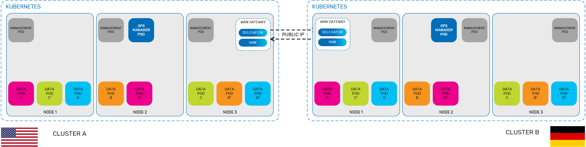

You can implement multi-region replication in Kubernetes by deploying a
This topic describes how to set up a WAN gateway for a
This topic assumes knowledge of how to set up a WAN gateway in
This topic also assumes knowledge of how to install
When defining a
The procedure described in this topic creates a WAN gateway environment for two clusters, one located geographically in the U.S. and the other in Germany. You will need the

Type the following command to initialize Helm on your machine:
helm init --service-account tillerHelm must be installed before you download the
The Manager is always installed first, followed by the service(s) that it will manage.
To install the Manager:
Download the Helm charts as described in the
You can use the default configuration to install the Manager for each geographical location. Use the following command to install a Manager for the U.S. location:
helm install gigaspaces/xap-manager --name usmanager --version=15.0.0 --namespace gigaspaces-ushelm install usmanager gigaspaces/xap-manager --version=15.0.0 --namespace gigaspaces-usTo check the status of the host and services (to ensure that the Managers have been installed properly), use the following command:
kubectl get allThe next step is to install a Space service (Processing Unit) for each geographical site, which is defined in the service JAR as described in the
<os-core:embedded-space id="space" space-name="usSpace" gateway-targets="gatewayTargets"/>
<os-gateway:targets id="gatewayTargets"
local-gateway-name="us" bulk-size="1000"
max-redo-log-capacity="1000000">
<os-gateway:target name="germany" />
</os-gateway:targets> Before you install the Helm chart for the
To configure the WAN gateway Helm chart:
Edit the Helm chart as shown in the following snippet from the Helm chart. This example defines the zone and the designates the ports that will be used for communication (the discovery port is the default port):
-Dcom.gs.zones=US
-Dcom.sun.jini.reggie.initialUnicastDiscoveryPort=4174
-Dcom.gigaspaces.start.httpPort=9713
-Dcom.gigaspaces.system.registryPort=10298Configure the properties for the WAN gateway in the JAR file, which override the property placeholders under the gatewayLookups section of the Helm chart. This host and discovery port are the host and ports exposed by Kubernetes in the Helm manager install.
For example, to configure the U.S. properties, you can set the following.
local-gateway-name=us
local-spaceUrl=jini://*/*/usSpace
local-lookup-host=<us-host>
local-lookup-port=4174
local-communication-port=8200
remote-gateway-name=germany
remote-lookup-host=<germany-host>
remote-lookup-port=4174
remote-communication-port=8200After updating the JAR with the Space public IP addresses for both clusters, you can deploy the WAN gateways, which also must have the LRMI enabled. For example, type the following command to deploy the WAN gateway for the U.S. site.
helm install insightedge-pu --name wangateway-us --set manager.name=usmanager,resourceUrl=<path to WAN gateway pu JAR>,service.lrmi.enabled=truehelm install wangateway-us insightedge-pu --set manager.name=usmanager,resourceUrl=<path to WAN gateway pu JAR>,service.lrmi.enabled=trueIf you have to take down a Space and then redeploy it, the public IP address will change. The WAN gateway service JAR must be updated accordingly.
To test whether your data is replicating between your clusters, you can use a Java client or Apache Zeppelin to write data to the source and then query the target.
To see information about your WAN gateways, you can view the system logs.